Confiabilidad y trazabilidad costaban 16.26% más en toda la red y 0.13% en un solo almacén
Análisis de cambio de proveedor de transporte y de modelo de camión dedicado en un distribuidor mayorista ferretero del sureste.

El camión del proveedor llegaba tarde al CEDIS o, en ocasiones, no llegaba. La mercancía ya separada se quedaba asentada, el equipo reprogramaba maniobras y lo que salía tarde regresaba como devolución. Nada de eso detenía la operación pero las consecuencias se acumulaban. El proveedor cobraba la tarifa más baja disponible, y por eso el arreglo llevaba años en pie.
Ninguna de esas fallas se cargaba al transportista. El sobretiempo caía en mano de obra, la mercancía detenida en costos de inventario y los remanejos en la operación del patio; sin histórico de indicadores, tampoco quedaba registro de los incumplimientos. La consecuencia era una comparación imposible: cualquier cotización de un competidor se veía cara frente a una tarifa que solo mostraba una parte de lo que costaba.
“La confiabilidad y la trazabilidad no se cotizan, pero siempre se pagan.”
El proveedor actual las cobraba en fallas que absorbía la empresa; el operador logístico nuevo las cobra en su tarifa y las sostiene con un compromiso operativo.
Entrevistas al personal de operaciones y trazado del flujo hacia los tres almacenes
Nueve incidencias atribuibles al proveedor actual, costeadas una por una
Modelo de camión dedicado por almacén, documentado en diagrama de calles
Costo real del proveedor actual contra tarifa integral del nuevo, almacén por almacén
Tres indicadores definidos: entregas a tiempo, llegadas de unidad y trazabilidad
Viable solo en ALM 1; piloto autorizado por la Dirección
Carta porte emitida, ejecución programada y cancelada el mismo día
El costo real del proveedor actual frente a la tarifa integral del proveedor nuevo obligó a replantear el alcance. Existían incidencias atribuibles al transportista, que nunca se le habían cargado, entraron por primera vez en la comparación, y al cuantificarlas la diferencia se redujo a 0.13% en el almacén 1, frente a 21.27% en el almacén 3 y 22.79% en el almacén 2. El objetivo inicial era cambiar de proveedor en los tres almacenes, el análisis respaldó uno.
La empresa opera con el proveedor original, pero ya no a ciegas: el costo de sus fallas está cuantificado a su ruta. El flujo del modelo de camión dedicado está documentado en diagrama de calles, con responsable por actividad y carta de instrucciones redactada por almacén. Ante cualquier cotización nueva, el modelo de costo total resuelve la comparación con los datos de la propia ruta.
- Piloto
- Autorizado
- Ejecución
- No se ejecutó
- Piloto
- Fuera
- Motivo
- Costo no justificado
- Piloto
- Fuera
- Motivo
- Costo no justificado
- Alcance
- 3 almacenes
- Restricción
- Salida del CEDIS
El piloto quedó autorizado solo en el almacén 1 y no llegó a ejecutarse: el día programado, el proveedor nuevo informó que carecía de permiso para salir del CEDIS en el horario requerido. La única salida era recorrer los horarios de entrega, y el ajuste no se limitaba a ese punto: la restricción estaba en la salida, así que alcanzaba a los tres almacenes. Ninguno podía absorberlo, porque llegar a tiempo era precisamente lo que se estaba pagando de más. Los almacenes 2 y 3 quedaron fuera porque la diferencia de costo no los justificaba, y la restricción de horario los alcanzaba igual que al primero.
Representación porcentual del costo total por transportista
- Alm 1
- Alm 2
- Alm 3
Cada barra es un transportista y vale el 100% del costo de transporte; los tres segmentos que la componen son los almacenes. La comparación no está entre las barras sino entre los segmentos: cuánto del costo absorbe cada almacén con un transportista y con el otro. Los segmentos apenas varían porcentualmente pero varían en tamaño de una barra a la otra. La estructura porcentual de los costos se reparte de forma parecida pero el total del costo cambia de un transportista a otro.
Aumento porcentual del costo por almacén
- Nuevo
- Actual
Cada vértice es un almacén y cada triángulo un transportista. Lo que importa no es el tamaño de las figuras sino la separación entre ellas: en cada vértice, esa distancia es lo que cuesta cambiar de transportista en ese almacén. En un almacén los dos triángulos casi se tocan; en los otros dos se despegan. La prueba piloto se autorizó donde se tocan y se descartó donde se separan.
Datos reales protegidos. Caso anonimizado por confidencialidad.